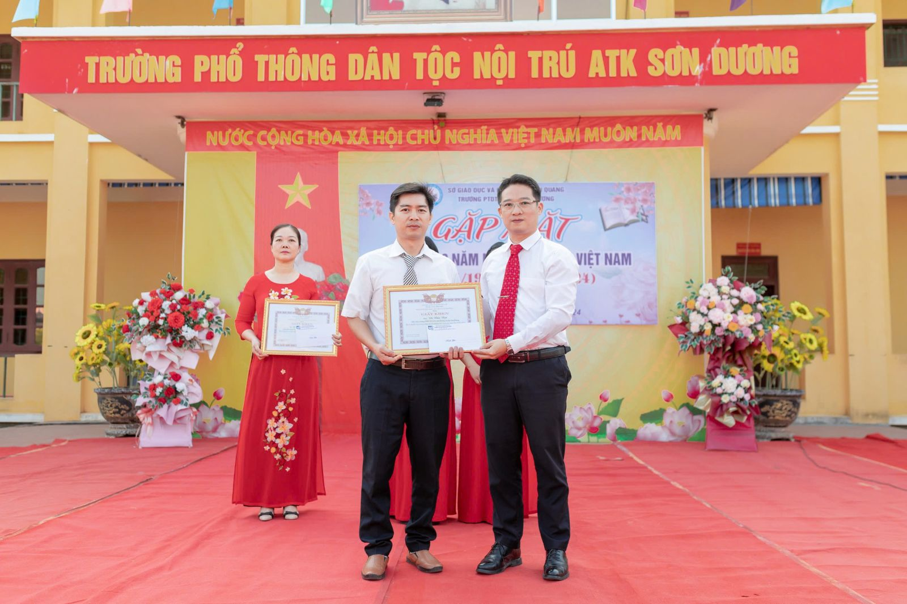
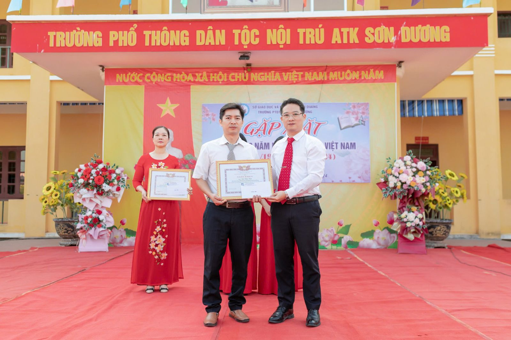

TRƯỜNG PTDTNT ATK SƠN DƯƠNG TỔ CHỨC GẶP MẶT KỶ NIỆM 42 NĂM NGÀY NHÀ GIÁO VIỆT NAM (20/11/1982 – 20/11/2024)
Có một nghề chở khách qua sông
Tháng năm đi qua, buồn vui, trăn trở
Có một nghề trồng hoa trên trang vở
Cho hoa cuộc đời thắm mãi niềm tin...
(Có một nghề - Vũ Tuấn)
Sáng ngày 20 tháng 11 hòa chung với không khí hân hoan náo nức của cả nước cùng hướng về ngày Hiến chương các nhà giáo, trường PTDTNT ATK Sơn Dương long trọng tổ chức Lễ gặp mặt kỷ niệm 42 năm ngày Nhà giáo Việt Nam (20/11/1982- 20/11/2024).
Đến dự buổi gặp mặt có các đồng chí đại biểu đại diện cho các cấp lãnh đạo huyện Sơn Dương, đại biểu các xã thuộc hai huyện Yên Sơn và Sơn Dương…; thầy giáo Nguyễn Ngọc Quyến, nguyên hiệu trưởng nhà trường; thầy giáo Lương Việt Đức, Bí thư Chi bộ, hiệu trưởng nhà trường; thầy giáo Trịnh Xuân Bảo, cô giáo Nguyễn Thị Vân Anh – Phó hiệu trưởng và 37 đồng chí cán bộ giáo viên, nhân viên cùng 475 em học sinh của nhà PTDTNT ATK Sơn Dương.
Buổi gặp mặt được bắt đầu bằng các tiết mục văn nghệ: Bài ca người giáo viên nhân dân, Múa chuông của người Dao… vui tươi, nhiều ý nghĩa do cô giáo Lý Hải Vân cùng đội xung kích nhà trường biểu diễn.
Trong buổi gặp mặt thầy giáo Lương Việt Đức – Hiệu trưởng nhà trường thay mặt BGH nhà trường đã tổng kết những thành tích mà nhà trường đã đạt được trong năm học 2023- 2024 và tuyên dương khen thưởng đồng các đồng chí đã đạt thành tích cao trong năm học 2023 – 2024: các đồng chí đạt chiến sĩ thi đua cấp tỉnh, cấp cơ sở; các đồng chí giáo viên có thành tích xuất sắc trong công tác Bồi dưỡng học sinh giỏi đạt giải 3 từ cấp tỉnh trở lên. Và tuyên dương, khen thưởng cô giáo Lý Hải Vân, cô giáo Ngô Vân Anh đạt danh hiệu Giáo viên giỏi cấp tỉnh năm 2024 – 2025. Đồng thời cũng tuyên dương, khen thưởng các tập thể, cá nhân học sinh có thành tích xuất sắc trong các phong trào thi đua chào mừng ngày 20/11/2024. Và thầy cũng gửi những lời chúc tốt đẹp nhất tới toàn thể các đồng chí là cán bộ giáo viên nhà trường lời chúc sức khỏe và thành công!
 

Cũng trong buổi gặp mặt, em Nguyễn Thị Thanh Thảo học sinh lớp 12A thay mặt cho 475 học sinh của nhà trường nói lời tri ân thầy cô:
Cảm ơn thầy cô rất nhiều vĩ đã có mặt trong cuộc đời của chúng em, cho chúng em cảm nhận được những yêu thương vô giá , và hơn hết là một vòng tay rộng mở lúc chúng em cần. Nhờ sự bảo ban, chăm sóc của thầy cô, chúng em dần trưởng thành qua từng ngày từng tháng. Với chúng em, mỗi ngày được học tập dưới mái trường này thực sự là một ngày vui, một ngày ý nghĩa. Ngày 20/11 đã đến, dù không biết làm gì để đáp lại công ơn to lớn ấy nhưng chúng em cũng xin gửi đến thầy cô những lời thành kính và tri ân sâu sắc nhất xuất phát từ sâu trong mỗi trái tim của chúng em. Cảm ơn thầy cô, người đã chọn công việc nơi sân khấu không có tiếng vỗ tay giòn giã, người đã gắn bó với chiếc bảng đen đầy bụi phấn, người đã lái biết bao chuyến đò qua con sông tri thức mà nơi cập bến là ước mơ. Và em cũng thay mặt 475 học sinh toàn trường, em xin hứa sẽ học tập thật tốt, sẽ gặt hái nhiều thành công trong cuộc sống để xứng đáng với những kì vọng của thầy cô. Dù sau này trên con đường của chúng em dẫu có phong ba, bão táp chúng em sẽ luôn vững tin bước qua vì chúng em biết ở một nơi nào đó thầy cô đang mỉm cười và theo dõi chúng em.
Kết thúc buổi gặp mặt kỷ niệm 42 năm ngày Nhà giáo Việt Nam là những bó hoa tươi thắm cùng những lời chúc sức khỏe, hạnh phúc và thành công trên hành trình chở khách sang sông của quý vị đại biểu, quý cha mẹ học sinh gửi đến các thầy cô giáo nhân viên nhà trường PTDTNT ATK Sơn Dương.